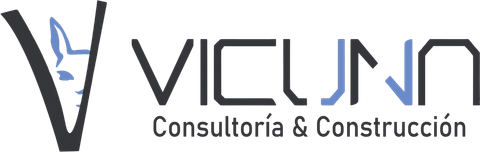
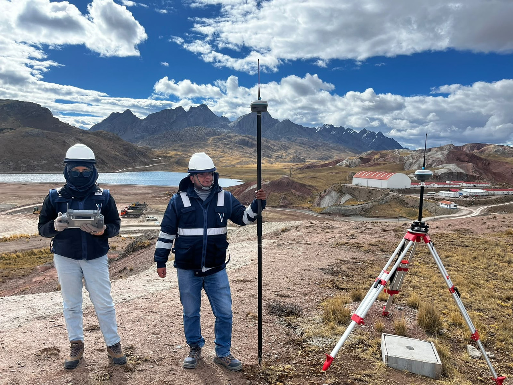

Wireframe, sistema de diseño Liquid Glass y arquitectura de componentes. Next.js · Tailwind · Framer Motion · React Three Fiber · Lenis.
Toda obra de Vicuña empieza igual: con un levantamiento topográfico. El hero lo convierte en la interacción central. Un relieve andino dibujado en curvas de nivel ocupa la pantalla; un lente hexagonal de vidrio sigue el cursor y, debajo de él, el terreno se convierte en obra.
No es un fondo decorativo: el vidrio cumple una función. Refracta el relieve y deja ver lo que Vicuña construye en ese lugar. El selector Ingeniería · Minería · Arquitectura cambia lo que aparece dentro del lente.
Recorrido: preloader → hero → proyectos → especialidades → clientes → contacto. El fondo alterna Azul Petróleo y Blanco Humo según la proporción de la guía (≈45 % claro, ≈25 % petróleo). Una diagonal corta cada cambio de fondo. El botón "Solicitar propuesta" está siempre visible en la navbar.
components/preloader/sessionStorage para no repetirse.prefers-reduced-motion o sin WebGL: logo plano con fundido de 300 ms. Usa aria-busy en el main.sections/hero/ · layout/Navbardamp, λ≈4). El selector fija el contenido del lente con un morph de 0,9 s. En móvil, el lente orbita solo y el selector pasa a control segmentado.layoutId). En móvil: hoja de vidrio a pantalla completa.sections/projects/layoutId hacia un panel con imagen grande, nombre, ubicación, especialidad, descripción breve y el botón "Quiero algo similar", que precarga el tipo de proyecto en el formulario.sections/specialties/sections/clients/mask + color) y al hacer hover muestran su color real. El marquee se pausa con hover o foco. La velocidad responde un poco a la del scroll de Lenis. Con prefers-reduced-motion pasa a una grilla estática de 3×3.sections/contact/ · layout/FooterLa guía de estilos Vicuña v1.0 manda. El Liquid Glass es el material en el que se expresa la marca: vidrio teñido de petróleo y celeste, con bisel de luz celeste. La escena de uso (un propietario que revisa propuestas de día, en oficina o en el celular) pide secciones de lectura claras; el petróleo se reserva para los momentos de inmersión: hero, especialidades y cierre.
--color-petroleo--color-vicuna--color-pizarra--color-celeste--color-humo--color-carbonContraste verificado en la guía: blanco/petróleo 12,97:1 · blanco/vicuña 5,46:1 · petróleo/celeste 5,46:1. Prohibido: blanco sobre celeste (2,37:1). En los fondos petróleo, el texto secundario es celeste aclarado (color-mix(celeste 35%, white)), nunca gris.
| Nivel | Muestra | Fuente | Tamaño | Interlínea |
|---|---|---|---|---|
| Display hero | Construyendo sueños | Anton · MAYÚS | clamp(56px, 7.5vw, 112px) | 0.95 |
| H1 sección | Obras que ya están en pie | Anton · MAYÚS | clamp(40px, 5vw, 64px) | 1.0 |
| H2 | Arquitectura y diseño | Anton · MAYÚS | 28–36px | 1.1 |
| H3 | Vivienda unifamiliar Chiclayo | Montserrat 700 | 20px | 1.3 |
| Cuerpo | Desarrollamos y supervisamos proyectos integrales… | Montserrat 400 | 16–18px · máx. 68ch | 1.55 |
| Botón / chip | Solicitar propuesta | Montserrat 700 | 13px · +0.08em | 1 |
| Pie de foto | Edificio residencial Pimentel · Chiclayo | Montserrat 400 | 12–13px | 1.4 |
Se usan next/font/google autoalojadas (Anton 400; Montserrat 400/600/700, subset latin) y como máximo dos pesos por pantalla. No se usan eyebrows ni kickers sobre los titulares: el titular en Anton se sostiene solo.

Solo en el hero. Es geometría real con refracción.
MeshTransmissionMaterial
ior 1.22 · thickness 0.6
chromaticAberration 0.035
roughness 0.06 · anisotropy 0.2
bevel 0.04 · samples 6Navbar, selector de especialidad, alcance de servicios y formulario sobre petróleo.
bg rgba(0,54,71,.34)
backdrop: blur(18px) saturate(140%)
border 1px rgba(120,176,200,.38)
inset 0 1px 0 rgba(255,255,255,.28)
sombra 0 18px 40px -18px
Pie de tarjeta del carrusel, tiles de clientes y panel de detalle de proyecto.
bg rgba(248,248,248,.62)
backdrop: blur(22px) saturate(160%)
border 1px rgba(255,255,255,.75)
inset 0 1px 0 rgba(255,255,255,.9)
Regla: el vidrio siempre está sobre algo que vale la pena refractar (relieve, foto, render). Nunca se usa vidrio sobre un fondo plano ni se apilan vidrios. Sin backdrop-filter (Firefox antiguo o modo de bajo consumo) se usa un fondo opaco de petróleo al 92 %.
Key: luz direccional cálida y rasante (#FFCF8A, 2.2), como el "atardecer" que pide la guía para la fotografía. Hace que las ventanas de la arquitectura brillen y alarga las sombras del relieve.
Rim: un Lightformer rectangular celeste a contraluz dibuja el bisel del lente y los cantos del símbolo V. Es la única fuente de luz "de marca".
Fill y atmósfera: Environment con lightformers propios (sin HDRI externo, ≈0 KB) y niebla petróleo para que el relieve se funda con el fondo. Se usa tonemapping ACES, sin bloom: el brillo sale de los materiales, no de un post-proceso.
Relieve: un plano desplazado por ruido (ridged FBM), con un shader de curvas de nivel celeste de 1 px y cada quinta curva más gruesa (curva maestra), como en un plano topográfico real.
vértices L/R012px999px≈ 14°8 / 1624 / 4064clamp(96,12vw,160)1240 + 32(.16,1,.3,1)180ms320ms700ms900–1200mslerp 0.10.9nativooffset -96offscale interno y un brillo de bisel que recorre el borde en 600 ms.::selection celeste/petróleo, caret vicuña, scrollbar fina en pizarra y anillo de foco vicuña con offset de 3 px.Next.js App Router con Server Components por defecto. Solo se hidratan las islas interactivas. Hay un único <Canvas> de R3F (hero y preloader comparten contexto WebGL), cargado con dynamic(..., {ssr:false}). El contenido está tipado en content/ como fuente única, listo para migrar a un CMS sin tocar componentes.
vicuna-landing/ ├─ app/ │ ├─ layout.tsx fuentes, metadata, <Providers> │ ├─ page.tsx compone las secciones (RSC) │ ├─ globals.css @theme tokens, ::selection, foco │ ├─ opengraph-image.tsx │ └─ api/contact/route.ts zod + honeypot + rate-limit + Resend ├─ components/ │ ├─ providers/ SmoothScroll · MotionProvider │ ├─ layout/ Navbar · NavIndicator · MobileMenu · Footer │ ├─ preloader/ Preloader · PreloaderV3D │ ├─ sections/ │ │ ├─ hero/ Hero · HeroCopy · RubroSwitch · HeroFallback │ │ ├─ projects/ Projects · ProjectFilters · ProjectCarousel │ │ │ ProjectCard · ProjectDetail │ │ ├─ specialties/ Specialties · SpecialtyPanel │ │ ├─ clients/ Clients · LogoMarquee · LogoTile │ │ └─ contact/ Contact · ContactForm · ProjectTypeChips │ │ ContactChannels · FormStatus │ ├─ three/ │ │ ├─ SceneCanvas.tsx Canvas único, dpr adaptativo │ │ ├─ Terrain.tsx relieve + shader de curvas │ │ ├─ HexLens.tsx transmisión + máscara stencil │ │ ├─ worlds/ Architecture · Engineering · Mining │ │ ├─ VSymbol.tsx ExtrudeGeometry del símbolo │ │ ├─ Lighting.tsx │ │ └─ shaders/ contours.vert/.frag │ └─ ui/ Button · GlassPanel · Hexagon · DiagonalEdge │ HexCursor · Field · Chip · Checkbox · Reveal ├─ content/ projects · specialties · clients · site ├─ lib/ hexagon · easing · cn · rate-limit │ └─ validation/contact.ts zod compartido ├─ hooks/ useLenis · useActiveSection · useWebGL │ usePointer · useMediaQuery ├─ store/ scene.ts zustand: rubro, puntero, fase ├─ public/media/ projects · field · clients · brand │ └─ simbolo-v.svg vectorización del símbolo └─ .env.example RESEND_API_KEY, CONTACT_TO
frameloop="demand" fuera de vista)Puente DOM ↔ 3D: un store de zustand con activeRubro, pointer, phase y heroInView. El DOM escribe y la escena lee dentro de useFrame, así no hay re-renders de React por frame. "Quiero algo similar" escribe prefillType y hace scroll con Lenis hasta #contacto.
dpr={[1, 1.75]} + PerformanceMonitor: si baja de 50 fps reduce dpr, samples de transmisión y segmentos del relieve.frameloop demand) cuando el hero sale de vista.next/image, AVIF/WebP, sizes correctos y blur placeholder. Las fotos del PDF no pasan de 1400 px de ancho, así que se muestran a ese tamaño como máximo.HeroFallback estático (relieve en SVG + render de arquitectura en máscara hexagonal) con la misma composición.next, react, typescript, tailwindcss v4 (tokens en @theme)motion (Framer Motion, motion/react): layout, AnimatePresence, useScrollthree, @react-three/fiber, @react-three/drei (MeshTransmissionMaterial, Lightformer, Mask), maathlenis (lenis/react)zustand, react-hook-form, zod, @hookform/resolversresend (envío del formulario; se puede cambiar por SMTP)lucide-react (iconos con un solo trazo)El brochure dice vicunaingerieros.com y la guía vicunaingenieros.com. Hay que confirmar el correcto para metadata, OG y enlaces.
Correo receptor (¿proyectos@ o gerencia@?) y proveedor de envío (Resend por defecto). Se necesita la API key en .env.
Las imágenes del PDF miden 600–1400 px, por debajo de los 1600 px que pide la guía. Si existen los originales de renders y fotos de campo, el carrusel y las especialidades ganan mucho.
Solo hay nombre y ubicación. Las descripciones breves se redactarán a partir del render y Vicuña deberá validarlas. No hay cifras, años ni testimonios, y no se inventarán.
Se vectorizará el símbolo "V" desde el raster de 492×504 para extruirlo. Si tienen el SVG o AI original, lo usamos y se garantiza la fidelidad.
El brochure muestra los usuarios vicunaingenieros, vicunaingenieros5 y "Vicuna Ingenieros & Arquitectos", pero sin URL. Hay que confirmar a qué plataforma corresponde cada uno.